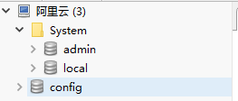
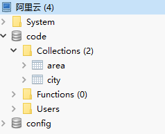
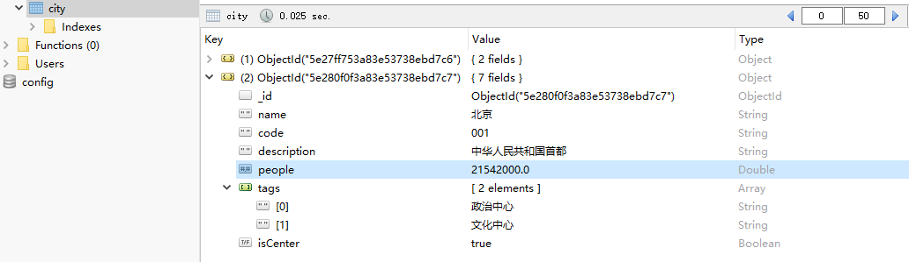
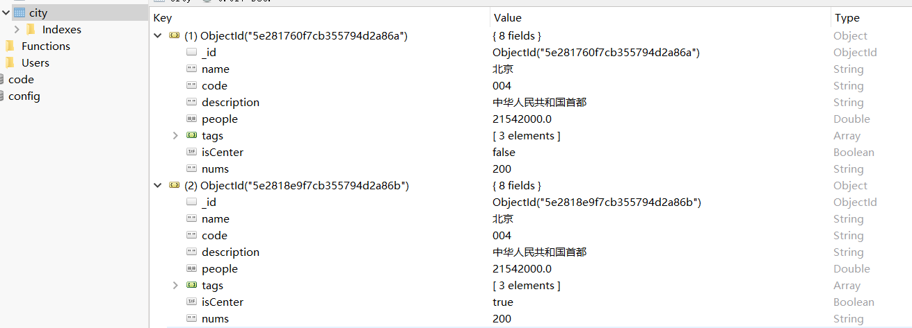
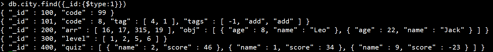
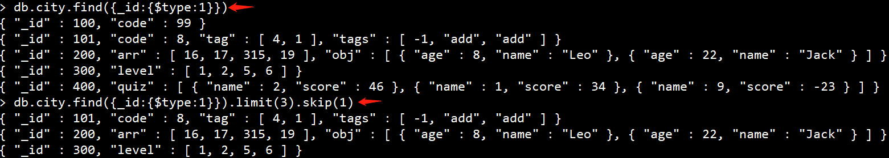
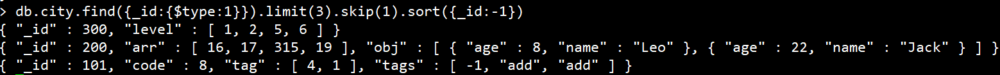
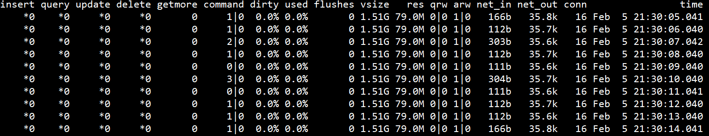
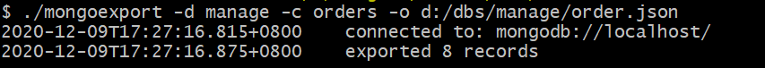
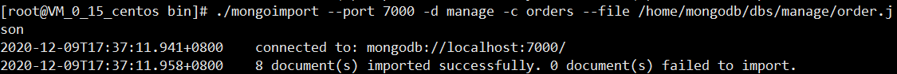

数据库系列-2-MongoDB
概述
NoSQL用于超大规模数据的存储。（例如谷歌或Facebook每天为他们的用户收集万亿比特的数据）。这些类型的数据存储不需要固定的模式，无需多余操作就可以横向扩展。
随着前端技术的不断迭代，代表MongoDB（文档数据库），Express（Web服务器），AngularJS（前端框架）和Node.js（后端JavaScript运行时）的MEAN堆栈开始流行。除其他原因外，MEAN堆栈很有吸引力，因为您需要了解的唯一语言是JavaScript。与等效的LAMP/LNMP堆栈相比，它还需要更少的RAM。
MongoDB无疑是NoSQL数据库中最受欢迎的数据库。它的文档数据模型为开发人员提供了极大的灵活性，而其分布式体系结构则提供了很好的可伸缩性。因此，通常选择MongoDB用于必须管理大量数据，得益于水平可伸缩性并处理不适合关系模型的数据结构的应用程序。
MongoDB 是由C++语言编写的，是一个基于分布式文件存储的开源数据库系统,旨在为WEB应用提供可扩展的高性能数据存储解决方案。在其之上还具有一个基于图形的存储。MongoDB实际上并不存储JSON：它存储BSON（BSON 是一种类似 JSON 的二进制形式的存储格式，是 Binary JSON 的简称），该扩展了JSON表示（字符串）以包括其他类型，例如int，long，date，浮点，decimal128和地理空间坐标等。
MongoDB的安装
MongoDB在阿里云(CentOS Linux release 7.6.1810)的安装流程如下：
获取压缩包
wget https://fastdl.mongodb.org/linux/mongodb-linux-x86_64-rhel70-4.2.2.tgz
解压
tar -zxvf mongodb-linux-x86_64-rhel70-4.2.2
将解压包拷贝到指定目录
mv mongodb-linux-x86_64-rhel70-4.2.2/ /usr/local/mongodb
创建数据存储路径
mkdir -p /data/db
修改配置
/etc/mongod.conf 文件配置如下（不存在时，自己手动新建）
dbpath = /data/db #数据存储目录
logpath = /data/logs/mongodb.log # 日志目录
fork = true # 后台进程启动
auth=true # 开启验证
port = 3001 # 端口号
bind_ip=0.0.0.0 # 对外访问
通过指定配置启动
确保mongod.conf中的dbpath与logpath对应目录存在，启动数据库：
./mongod -f /etc/mongod.conf
mongod 与 mongo 命令
前者是启用MongoDB进程，后者是对MongoDB进行连接操作
win10 下的安装
可参照MongoDB的安装，mongod和mongo的区别进行设置，自己win10上安装时作为window service服务一直无法启动，无奈只好通过命令行手动启动 mongod --dbpath "D:/MongoDB/Server/4.4/data/db"
MongoDB中的概念
| RDBMS | MongoDB |
| —— | —— | —— |
| 数据库 | 数据库 |
| 表格 | 集合 |
| 行 | 文档 |
| 列 | 字段 |
| 表联合 | 嵌入文档 |
| 主键 | 主键 (MongoDB 提供了 key 为 _id ) |
MongoDB的使用
数据库安装完毕后，默认是有三个数据库的，这些数据库名是保留的，可以直接访问这些有特殊作用的数据库。
> show dbs
admin 0.000GB
config 0.000GB
local 0.000GB
- admin： 从权限的角度来看，这是”root”数据库。要是将一个用户添加到这个数据库，这个用户自动继承所有数据库的权限。一些特定的服务器端命令也只能从这个数据库运行，比如列出所有的数据库或者关闭服务器。
- local: 这个数据永远不会被复制，可以用来存储限于本地单台服务器的任意集合。
- config: 当Mongo用于分片设置时，config数据库在内部使用，用于保存分片的相关信息。
如果执行 show dbs 返回为空，说明开启的数据库认证，但是没有正确登录访问，此时需要切换到admin数据库，执行添加操作：
use admin
db.createUser({user:"admin",pwd:"admin",roles:["root"]})
此时再通过用户名密码连接，即可正常展示，如果没有开启认证，强烈建议开启 ./mongod --auth

通过可视化工具连接
本文中使用的可视化工具为Robo 3T，
通过shell连接
进入mongodb安装目录（如：/usr/local/mongodb/bin), 执行以下命令：
./mongo --port 3001
如果添加账号管理后需通过以下方式连接：
./mongo --port 3001 -u admin -p xxx
ps: 如果通过进程守护方式启动，依旧可以通过此方式再次进入shell
如果需要通过进程守护方式启动
./mongo --fork --port 3001 -u admin -p xxx
创建数据库
use code
但此时创建的数据库 code 并不在数据库的列表中， 要显示它，我们需要向 code 数据库插入一些数据。（ps: MongoDB 中默认的数据库为 test，如果你没有创建新的数据库，将默认使用test数据库）
删除数据库
db.dropDatabase()
会删除当前use的数据库。
创建集合
集合的概念类似MySql中的“表”，当插入一些文档时，MongoDB 会自动创建集合：
db.city.insert({"name":"郑州"})
自动创建了集合city
我们也可以显式创造集合：
db.createCollection("area")

查询当前数据库下，集合个数：
> db.city.count();
2
查询当前数据库下，集合列表：
> show collections;
city
area
或：
> show tables
city
area
删除集合
> db.area.drop() // 删除集合area
true
> show tables // 查看当前集合
city
area集合已经被删除
插入文档
文档的数据结构和 JSON 基本一样。所有存储在集合中的数据都是 BSON 格式。
使用 insert() 或 save() 方法向集合中插入文档：
db.city.insert({
name: '北京',
code: "001",
description: '中华人民共和国首都',
people: 2154.2*10000,
tags: ['政治中心', '文化中心'],
isCenter: true
})

save() 方法类似于 insert() 方法。如果指定 _id 字段，则会更新该 _id 的数据，不指定话功能同insert()方法:
db.city.save({
_id:ObjectId("5e280f0f3a83e53738ebd7c7"),
name: '北京',
code: "100"
})
insert() 方法如果指定的_id字段不存在则新建，如果存在就会报错，不会像save()方法一样更新数据
下表为MongoDB中常用的几种数据类型：
| 数据类型 | 描述 |
|---|---|
| String | 字符串。存储数据常用的数据类型。在 MongoDB 中，UTF-8 编码的字符串才是合法的。 |
| Integer | 整型数值。用于存储数值。根据你所采用的服务器，可分为 32 位或 64 位。 |
| Boolean | 布尔值。用于存储布尔值（真/假）。 |
| Double | 双精度浮点值。用于存储浮点值。 |
| Min/Max keys | 将一个值与 BSON（二进制的 JSON）元素的最低值和最高值相对比。 |
| Array | 用于将数组或列表或多个值存储为一个键。 |
| Timestamp | 时间戳。记录文档修改或添加的具体时间。 |
| Object | 用于内嵌文档。 |
| Null | 用于创建空值。 |
| Symbol | 符号。该数据类型基本上等同于字符串类型，但不同的是，它一般用于采用特殊符号类型的语言。 |
| Date | 日期时间。用 UNIX 时间格式来存储当前日期或时间。你可以指定自己的日期时间：创建 Date 对象，传入年月日信息。 |
| Object ID | 对象 ID。用于创建文档的 ID。 |
| Binary Data | 二进制数据。用于存储二进制数据。 |
| Code | 代码类型。用于在文档中存储 JavaScript 代码。 |
| Regular expression | 正则表达式类型。用于存储正则表达式。 |
删除文档
删除文档使用remove方法，语法格式如下：
db.collection.remove(
<query>,
{
justOne: <boolean>,
writeConcern: <document>
}
)
参数说明：
- query :（可选）删除的文档的条件。
- justOne : （可选）如果设为 true 或 1，则只删除一个文档，如果不设置该参数，或使用默认值 false，则删除所有匹配条件的文档。
- writeConcern :（可选）抛出异常的级别。
删除name:北京 的文档,且只删除一个:
> db.city.remove({name:"北京"},1)
WriteResult({ "nRemoved" : 1 }) //成功删除1条
如果想清空所有：
db.city.remove({})
更新文档
MongoDB 使用 update() 和 save() 方法来更新集合中的文档。save方法上面已经介绍过，下面为update方法语法格式：
db.collection.update(
<query>,
<update>,
{
upsert: <boolean>,
multi: <boolean>,
writeConcern: <document>
}
)
参数说明：
- query : update的查询条件，类似sql update查询内where后面的。
- update : update的对象和一些更新的操作符（参照下方表格）等，也可以理解为sql update查询内set后面的
- upsert : 可选，这个参数的意思是，如果不存在update的记录，是否插入objNew,true为插入，默认是false，不插入。
- multi : 可选，mongodb 默认是false,只更新找到的第一条记录，如果这个参数为true,就把按条件查出来多条记录全部更新。
- writeConcern :可选，抛出异常的级别。
字段更新操作符
| 名称 | 描述 |
|---|---|
| $currentDate | 将字段的值设置为当前日期，可以是Date或Timestamp |
| $inc | 按指定的数量增加字段的值 increment |
| $min | 仅当指定的值小于现有字段值时才更新字段 |
| $max | 仅当指定的值大于现有字段值时才更新字段 |
| $mul | 将字段的值乘以指定的量 |
| $rename | 重命名字段 |
| $set | 设置文档中字段的值 |
| $setOnInsert | 如果更新导致文档插入，则设置字段的值。对修改现有文档的更新操作没有影响 |
| $unset | 从文档中删除指定的字段 |
$set操作符的使用例子：
将所有包含name为北京的数据，更新nums字段：
db.city.update({"name":"北京" },{$set:{"nums":"200"}},{multi:true})
结果为：

$currentDate操作符的使用格式是：
{ $currentDate: { <field1>: <typeSpecification1>, ... } }
<typeSpecification>字段可以是一个boolean true类型设置当前字段是日期Date类型，或者一个文档{ $type: "timestamp" }或者{ $type: "date" }根据指定的类型设置日期，该操作是只支持小写的timestamp和小写的date。
它只能用于update方法中：
db.city.update({"name":"北京" },{$currentDate: {lastModified: true,"time.timestamp": { $type: "timestamp" },"time.date": { $type: "date" }}})
运行结果：
> db.city.find({})
{ "_id" : ObjectId("5e281760f7cb355794d2a86a"), "name" : "北京", "code" : "004", "description" : "中华人民共和国首都", "people" : 21542000, "tags" : [ "政治中心", "文化中心", "交流中心" ], "isCenter" : false, "lastModified" : ISODate("2020-02-03T15:46:21.172Z"), "time" : { "date" : ISODate("2020-02-03T15:46:21.172Z"), "timestamp" : Timestamp(1580744781, 1) } }
$inc操作符的使用：
它可以接收正的和负的值，如果指定的字段不存在则$inc操作符创建这个字段并且设置这个字段的值为指定的在值；如果使用$inc操作符的字段的值如果值为null或非数字则将会报异常；
db.city.update({"name":"北京" },{$inc: {"people":-1}})
$min/$max操作符的使用：
db.city.update({"name":"北京" },{$inc: {"people":-1}})
如果指定的字段不存在的话会设置该字段的值为指定的值；不同类型的数据比较的时候会使用BSON比较规则；
db.city.update({"name":"北京" },{$min: {"people":10}})
运行结果：
> db.city.find({})
{ "_id" : ObjectId("5e281760f7cb355794d2a86a"), "name" : "北京", "code" : "004", "description" : "中华人民共和国首都", "people" : 10, "tags" : [ "政治中心", "文化中心", "交流中心" ], "isCenter" : false, "lastModified" : ISODate("2020-02-03T15:46:21.172Z"), "time" : { "date" : ISODate("2020-02-03T15:46:21.172Z"), "timestamp" : Timestamp(1580744781, 1) } }
$mul操作符的使用：
如果指定的字段在文档中不存在，$mul操作符创建字段并且设置值为0作为乘数；如果使用$inc操作符的字段的值如果值为null或非数字则将会报异常;
db.city.update({"name":"北京" },{$mul: {"ins":100, "people":-1}})
运行结果：
> db.city.find({})
{ "_id" : ObjectId("5e281760f7cb355794d2a86a"), "name" : "北京", "code" : "004", "description" : "中华人民共和国首都", "people" : -10, "tags" : [ "政治中心", "文化中心", "交流中心" ], "isCenter" : false, "lastModified" : ISODate("2020-02-03T15:46:21.172Z"), "time" : { "date" : ISODate("2020-02-03T15:46:21.172Z"), "timestamp" : Timestamp(1580744781, 1) }, "ins" : 0 }
$rename操作符的使用：
db.city.update({"name":"北京" },{$rename: {"ins":"newIns"}})
$setOnInsert操作符的使用:
如果upsert设为true。当满足查询条件的记录存在，则不执行$setOnInsert中的操作，当满足条件的记录不存在则执行$setOnInsert操作：
db.city.update({_id:100 },{$setOnInsert: {"people":55}},{ upsert: false })
// 查询条件不存在，且upsert为false，不更新
db.city.update({_id:100 },{$setOnInsert: {"people":55}},{ upsert: true })
// 查询条件不存在，且upsert为true，更新一条数据
$unset操作符的使用：
db.city.update({"name":"北京" },{$unset:{"nums":"10"}},{multi:true})
//无论nums值是多少，均可删除nums字段
数组更新操作符
| 名称 | 描述 |
|---|---|
| $ | 作为占位符，用来更新与查询条件匹配的第一个元素 |
| $[] | 作为占位符，用来更新与查询条件匹配的所有元素 |
| $[<identifier>] | 作为占位符，用来更新与查询条件匹配的，并且与arrayFilters条件匹配的所有元素 |
| $addToSet | 添加值到一个数组中去，如果数组中已经存在该值那么将不会有任何的操作 |
| $push | 把value追加到数组field里, 数组不存在则创建，且不会去重 |
| $pop | 删除数组内第一个或最后一个元素 |
| $pull | 从数组field内删除一个等于value的值。 |
| $pullAll | 用法同$pull一样，可以一次删除数组内的多个值 |
$操作符表示要更新的数组中的元素，且无需显式指定该元素在数组中的位置。对于文档：
{ "_id" : 200, "arr" : [ 1, 2, 3, 4 ], "obj" : [ { "age" : 10, "name" : "Tom" }, { "age" : 20, "name" : "Jack" } ] }
执行下面操作:
> db.city.update({_id:200,arr:3},{$set:{"arr.$":300}}) //arr的3替换为300
> db.city.update({_id:200,"obj.age":10},{$set:{"obj.$.name":"Leo"}}) // obj中age为10的元素name属性改为Leo
运行结果：
> db.city.find({_id:200})
{ "_id" : 200, "arr" : [ 1, 2, 300, 4 ], "obj" : [ { "age" : 10, "name" : "Leo" }, { "age" : 20, "name" : "Jack" } ] }
$[]操作符表示要表示应修改指定数组字段中的所有元素。对于文档：
{ "_id" : 200, "arr" : [ 1, 2, 300, 4 ], "obj" : [ { "age" : 10, "name" : "Leo" }, { "age" : 20, "name" : "Jack" } ] }
执行下面操作:
> db.city.update({_id:200,"arr":1},{$inc:{"arr.$[]":5}})
> db.city.update({_id:200},{$inc:{"obj.$[].age":-2}})
运行结果：
> db.city.find({_id:200})
{ "_id" : 200, "arr" : [ 6, 7, 305, 9 ], "obj" : [ { "age" : 8, "name" : "Leo" }, { "age" : 18, "name" : "Jack" } ] }
$[<identifier>]操作符则在$[]的基础上增加了arrayFilters字段的过滤。我们继续执行下面操作：
> db.city.update({_id:200},{$inc:{"arr.$[element]":10}},{ arrayFilters: [ { "element": { $lt:100 } } ] })
> db.city.update({_id:200},{$inc:{"obj.$[element].age":4}},{arrayFilters: [ { "element.age": { $gt: 10 } } ]})
运行结果：
> db.city.find({_id:200})
{ "_id" : 200, "arr" : [ 16, 17, 305, 19 ], "obj" : [ { "age" : 8, "name" : "Leo" }, { "age" : 22, "name" : "Jack" } ] }
$push操作符要求操作的字段如果存在则必须为数组，否则会报错，它的使用：
> db.city.update({"_id":101 },{$push:{"tag":1}})
运行结果（tag字段不存在）：
> db.city.find({"_id":101 })
{ "_id" : 101, "code" : 8, "tag" : [ 1 ] }
$addToSet操作符的使用基本与$push等同，区别是$addToSet操作符会进行去重操作，如果添加的值已经存在，则不会添加。
> db.city.update({"_id":101 },{$addToSet:{"tag":1}})
> db.city.find({"_id":101 })
{ "_id" : 101, "code" : 8, "tag" : [ 1 ] }
$pop操作符的使用：
{ $pop: { <field>: <-1 | 1>, ... } }
-1：删除第一个，1：删除第一个
对于文档：
{ "_id" : 101, "code" : 8, "tag" : [ 1, 2, 3, 3, 4, 9 ] }
删除第一个元素
> db.city.update({"_id":101 },{$pop:{"tag":-1}})
> db.city.find({"_id":101 })
{ "_id" : 101, "code" : 8, "tag" : [ 2, 3, 3, 4, 9 ] }
删除最后一个元素
> db.city.update({"_id":101 },{$pop:{"tag":1}})
> db.city.find({"_id":101 })
{ "_id" : 101, "code" : 8, "tag" : [ 2, 3, 3, 4] }
$pull操作符的使用, 对于文档：
{ "_id" : 101, "code" : 8, "tag" : [ 1, 2, 3, 3, 4, 9 ] }
进行删除操作：
db.city.update({"_id":101 },{$pull:{"tag":1}})
运行结果：
> db.city.find({"_id":101 })
{ "_id" : 101, "code" : 8, "tag" : [ 2, 3, 3, 4, 9 ] }
$pullAll操作符的使用，要删除的value必须放在数组内，否则会报错：
对于文档：
{ "_id" : 101, "code" : 8, "tag" : [ 2, 3, 3, 4, 9 ] }
进行删除操作：
db.city.update({"_id":101 },{$pullAll:{"tag":[3,9]}})
运行结果，所有的3与9均被删除：
> db.city.find({"_id":101 })
{ "_id" : 101, "code" : 8, "tag" : [ 2, 4 ] }
除了上述操作符外，更新操作还有几个修饰符操作
| 名称 | 描述 |
|---|---|
| $each | 使用$push或$addToSet操作符添加多个元素到数组字段中 |
| $position | 使用$push操作符插入数组中的数据元素的位置 |
| $slice | 限制使用$push操作符插入数组中的数据元素的数量 |
| $sort | 修改 $push 操作符 |
例子1-同时插入多个数据：
> db.city.update({_id:300},{$push:{level:{$each:[2,3,4,5,6]}}})
//结果：
> db.city.find({_id:300})
{ "_id" : 300, "level" : [ 1, 2, 3, 4, 5, 6 ] }
例子2-同时插入多个数据，并指定位置：
// $position值大于现有长度，则按目前数组长度开始追加
> db.city.update({_id:300},{$push:{level:{$each:[2,3,4],$position:5}}})
{ "_id" : 300, "level" : [ 1, 2, 3, 4 ] }
// $position值为负数时，则从数组最前面开始追加
> db.city.update({_id:300},{$push:{level:{$each:[-2,-3,-4],$position:-5}}})
{ "_id" : 300, "level" : [ -2, -3, -4, 1, 2, 3, 4 ] }
// 不超过目前现有数组长度时，则按指定位置开始追加
> db.city.update({_id:300},{$push:{level:{$each:[0],$position:0}}})
{ "_id" : 300, "level" : [ 0, -2, -3, -4, 1, 2, 3, 4 ] }
例子3-同时插入多个数据，并进行截取：
原始数据为：{ "_id" : 300, "level" : [ 0, -2, -3, -4, 1, 2, 3, 4 ] }，$slice的操作可以理解为执行$push操作后的数据再执行$slice操作：
//大于0且小于最终数组长度时，会在指定位置开始切割数组
> db.city.update({_id:300},{$push:{level:{$each:[5,6],$slice:5}}})
{ "_id" : 300, "level" : [ 0, -2, -3, -4, 1 ] }
//为负数时，则会从最终数组最后一位开始往前切割
> db.city.update({_id:300},{$push:{level:{$each:[5,6],$slice:-3}}})
{ "_id" : 300, "level" : [ 1, 5, 6 ] }
//为0时则会将数组置空
> db.city.update({_id:300},{$push:{level:{$each:[5,6],$slice:0}}})
{ "_id" : 300, "level" : [ ] }
例子4-同时插入多个数据，并按指定顺序排序($sort取值只能为1或者-1)：
//按score正序排序
> db.city.update({_id:400},{$push:{quiz:{$each:[{name:2,score:46},{name:9,score:-23}],$sort:{score:1}}}})
{ "_id" : 400, "quiz" : [ { "name" : 9, "score" : -23 }, { "name" : 1, "score" : 34 }, { "name" : 2, "score" : 46 } ] }
//按score倒序排序
> db.city.update({_id:400},{$push:{quiz:{$each:[],$sort:{score:-1}}}})
{ "_id" : 400, "quiz" : [ { "name" : 2, "score" : 46 }, { "name" : 1, "score" : 34 }, { "name" : 9, "score" : -23 } ] }
位更新操作符
$bit运算符执行字段的按位更新，操作符的使用格式是：
{ $bit: { <field>: { <and|or|xor>: <int> } } }
例如原始数据为：
{ "_id" : 101, "code" : 13 }
执行与运算：
db.city.update({"_id":101 },{$bit: {"code":{and:NumberInt(10)}}})
执行结果：
{ "_id" : 101, "code" : 8 }
内部执行为：
1101
1010
----
1000
查询文档
查询文档使用find方法，语法格式如下：
db.collection.find(query, projection)
参数说明：
- query ：可选，使用查询操作符指定查询条件
- projection ：可选，使用投影操作符指定返回的键。查询时返回文档中所有键值， 只需省略该参数即可（默认省略）。
例如，查询city集合下所有数据：
> db.city.find()
{ "_id" : ObjectId("5e281760f7cb355794d2a86a"), "name" : "北京", "code" : "004", "description" : "中华人民共和国首都", "people" : 21542000, "tags" : [ "政治中心", "文化中心", "交流中心" ], "isCenter" : false }
{ "_id" : ObjectId("5e2818e9f7cb355794d2a86b"), "name" : "北京", "code" : "004", "description" : "中华人民共和国首都", "people" : 21542000, "tags" : [ "政治中心", "文化中心", "交流中心" ], "isCenter" : true }
如果你需要以易读（格式化）的方式来读取数据，可以使用 pretty() 方法：
> db.city.find().pretty()
{
"_id" : ObjectId("5e281760f7cb355794d2a86a"),
"name" : "北京",
"code" : "004",
"description" : "中华人民共和国首都",
"people" : 21542000,
"tags" : [
"政治中心",
"文化中心",
"交流中心"
],
"isCenter" : false
}
{
"_id" : ObjectId("5e2818e9f7cb355794d2a86b"),
"name" : "北京",
"code" : "004",
"description" : "中华人民共和国首都",
"people" : 21542000,
"tags" : [
"政治中心",
"文化中心",
"交流中心"
],
"isCenter" : true
}
条件查询
MongoDB支持类似MySql的where语句的条件查询：
| 操作 | 格式 | 例子 | RDBMS中的类似语句 | 条件缩写解释 |
|---|---|---|---|---|
| 等于 | {<key>:<value>} | db.city.find({“name”:”北京”}) | where name = ‘北京’ | equal |
| 小于 | {<key>:{$lt:<value>}} | db.city.find({“nums”:{$lt:50}}) | where nums < 50 | less than |
| 小于或等于 | {<key>:{$lte:<value>}} | db.city.find({“nums”:{$lte:50}}) | where nums <= 50 | lt equal |
| 大于 | {<key>:{$gt:<value>}} | db.city.find({“nums”:{$gt:50}}) | where nums > 50 | greater than |
| 大于或等于 | {<key>:{$gte:<value>}} | db.city.find({“nums”:{$gte:50}}) | where nums >= 50 | gt equal |
| 不等于 | {<key>:{$ne:<value>}} | db.city.find({“nums”:{$ne:50}}) | where nums != 50 | not equal |
AND查询
MongoDB 的 find() 方法可以传入多个键(key)，每个键(key)以逗号隔开:
> db.city.find({"isCenter":{$ne:false},"name":"北京"}).pretty()
{
"_id" : ObjectId("5e2818e9f7cb355794d2a86b"),
"name" : "北京",
"code" : "004",
"description" : "中华人民共和国首都",
"people" : 21542000,
"tags" : [
"政治中心",
"文化中心",
"交流中心"
],
"isCenter" : true
}
OR查询
例如，我们查询city集合中，code为004，且包含 isCenter为true 或 name为天津 的数据（AND 和 OR 联合使用）:
> db.city.find({"code":"004",$or:[{"isCenter":true},{"name":"天津"}]}).pretty()
{
"_id" : ObjectId("5e2818e9f7cb355794d2a86b"),
"name" : "北京",
"code" : "004",
"description" : "中华人民共和国首都",
"people" : 21542000,
"tags" : [
"政治中心",
"文化中心",
"交流中心"
],
"isCenter" : true
}
{
"_id" : ObjectId("5e36cc388a5af806fe1893ae"),
"name" : "天津",
"code" : "004"
}
$type 操作符
$type操作符是基于BSON类型来检索集合中匹配的数据类型，并返回结果。具体数值对应的数据类型参考此处
例如我们查询所有id为Double类型的文档，结果如下：

limit与skip方法
limit()方法接受一个数字参数，该参数指定从MongoDB中读取的记录条数。skip()方法来跳过指定数量的数据，skip方法同样接受一个数字参数作为跳过的记录条数：

sort排序
sort() 方法可以通过参数指定排序的字段，并使用 1 和 -1 来指定排序的方式，其中 1 为升序排列，而 -1 是用于降序排列。

索引
MongoDB 在创建集合期间在_id字段上创建了唯一索引。该索引可防止客户端插入两个_id字段值相同的文档。_id字段的索引不能删除。
MongoDB允许使用createIndex方法来手动创建索引，基本语法格式如下所示：
db.collection.createIndex(keys, options)
Key 值为你要创建的索引字段，1 为指定按升序创建索引，-1 为按降序创建索引。
例如创建title作为索引
db.col.createIndex({"title":1})
也可以设置使用多个字段创建索引（关系型数据库中称作复合索引）。
db.col.createIndex({"title":1,"description":-1})
关于options的具体配置可参见此处
数据库创建管理员
截止到目前，我们的数据库是对外开放的，意味着任何人只要拿到数据库地址，均可连接访问，显然，这是极其危险的，我们需要对数据库的访问加以限制：
切换到admin数据库：
> use admin
switched to db admin
创建管理员账号：
> db.createUser({user: 'admin', pwd: 'xxx',roles:[{role: 'root', db: 'admin'}]})
此时我们需要重启下数据库（基于/usr/local/mongodb/bin目录）：
./mongod --shutdown //关闭数据库
开启/etc/mongod.conf下的用户认证:
dbpath = /data/db #数据存储目录
logpath = /data/logs/mongodb.log # 日志目录
fork = true # 后台进程启动
auth=true # 开启验证
port = 3001 # 端口号
bind_ip=0.0.0.0 # 对外访问
启动数据库：
./mongod -f /etc/mongod.conf
这样便完成了用户校验功能。
MongoDB监控
mongostat是mongodb自带的状态检测工具，在命令行下使用。它会间隔固定时间获取mongodb的当前运行状态，并输出。可以shell下执行：
./mongostat --port 3001 -u admin -p xxxx --authenticationDatabase=admin
运行结果：

其他操作
修改密码
use admin
db.changeUserPassword('admin','12xxx');
停止mongodb
db.shutdownServer()
尽量避免使用看kill命令来操作
导出数据
mongodb官网有配套的导出工具：mongoexport, 语法如下：
mongoexport -d dbname -c collectionname -o file --type json/csv -f field
参数说明：
-d ：数据库名
-c ：collection名
-o ：输出的文件名
--type ： 输出的格式，默认为json
-f ：输出的字段，如果-type为csv，则需要加上-f "字段名"
例子：
./mongoexport -d manage -c orders -o d:/dbs/manage/order.json # 进入安装目录bin下执行

导入数据
mongodb官网有配套的导出工具：mongoimport, 语法如下：
mongoimport -d dbname -c collectionname --file filename --headerline --type json/csv -f field
参数说明：
-d ：数据库名
-c ：collection名
--type ：导入的格式默认json
-f ：导入的字段名
--headerline ：如果导入的格式是csv，则可以使用第一行的标题作为导入的字段
--file ：要导入的文件
例子：
./mongoimport --port 7000 -d manage -c orders --file /home/mongodb/dbs/manage/order.json # 进入安装目录bin下执行

导入导出过程中需启动mongodb服务，操作过程中无需密码，如果不是默认端口，需要指定端口。window下安装目录若无相关工具，请进入官网下载页面进行下载安装